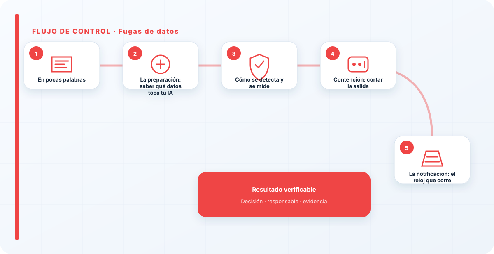
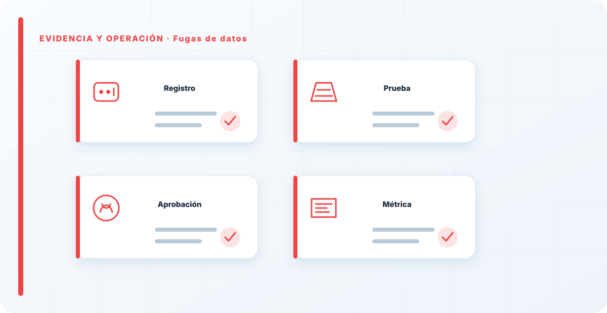

En pocas palabras
Una fuga de datos a través de la IA rara vez es espectacular: alguien pegó información confidencial en una herramienta no aprobada, o un RAG mal configurado le devolvió a un usuario datos que no debía ver. El daño no es un sistema caído, es información que ya está donde no debería, y eso muchas veces no se puede deshacer. Por eso la respuesta se centra en cuatro cosas: cortar rápido para que no siga saliendo, medir bien para saber qué obligaciones tienes, notificar a tiempo, y atacar la causa para que no se repita. Y sobre todo en la prevención, porque en una fuga el daño casi nunca se deshace: el mejor incidente de fuga es el que, gracias a un buen gobierno del dato, no llega a pasar.
La preparación: saber qué datos toca tu IA
La preparación para una fuga empieza por algo que debería existir mucho antes del incidente: saber qué datos puede tocar cada sistema de IA y con qué clasificación. Si no sabes qué información maneja tu RAG o a qué tiene acceso tu asistente, el día de la fuga no podrás ni medir el alcance rápido, que es justo lo que más urge. La clasificación del dato y el inventario de qué toca la IA no son solo higiene de gobierno; son lo que hace posible una respuesta rápida.
También conviene tener claro de antemano el circuito legal: quién decide si una fuga es notificable, y con qué plazos. Porque en cuanto confirmas una fuga de datos personales, empiezan a correr relojes legales, y descubrir el procedimiento sobre la marcha es perder un tiempo que no tienes. La preparación aquí es, en buena parte, tener resueltas de antemano las preguntas que el pánico del momento no te dejará responder bien.
Cómo se detecta y se mide
Una fuga se detecta por varias vías: alertas de DLP, un usuario que reporta ver datos ajenos, o una revisión de logs de acceso y de uso de herramientas. Pero detectar es solo el principio; lo que de verdad marca la respuesta es medir el alcance, y hay que hacerlo rápido y con rigor a la vez, porque de esa medición dependen decisiones legales.
Las preguntas son: qué datos exactamente, de quién, cuántos registros, y a dónde han ido. Sin esa foto no puedes contener bien, y sobre todo no puedes notificar como toca —ni a los afectados ni a la autoridad—. Una medición apresurada que subestime el alcance te deja incumpliendo obligaciones sin saberlo; una que lo sobreestime dispara una crisis mayor de la necesaria. Por eso esta fase merece cuidado aunque el reloj apriete.

Contención: cortar la salida
Lo primero es cortar la salida: revocar el acceso, desconectar la integración o la herramienta por la que se escapa, cerrar el permiso mal configurado en el RAG. Contener aquí no es recuperar el dato —que a menudo es imposible—, es evitar que siga saliendo mientras investigas. Es la diferencia entre una fuga que afectó a cien registros y una que, por no cortarse a tiempo, acabó afectando a diez mil.
En paralelo, se preserva la evidencia de qué pasó: logs, configuraciones, capturas. Hará falta tanto para la investigación como para demostrar, si toca, qué se hizo y cuándo —algo que las autoridades valoran y que puede ser relevante legalmente—. Contener sin preservar la evidencia es resolver el problema técnico y quedarte sin poder explicar después qué ocurrió, que es un problema distinto pero también serio.
La notificación: el reloj que corre
La fuga de datos tiene una fase que otros incidentes no tienen: la notificación. Según qué datos y a quién afecten, puede haber obligaciones legales de avisar a los afectados y a la autoridad de protección de datos, con plazos que corren desde que conoces la fuga, no desde que te apetece. Por eso legal entra pronto en la respuesta, no al final: empezar a contar los plazos tarde es, en sí mismo, un incumplimiento adicional al de la propia fuga.
Esta es la parte donde la respuesta a una fuga de datos por IA se parece a cualquier otra fuga de datos: la tecnología cambia, las obligaciones no. Un dato personal filtrado por un LLM es un dato personal filtrado, con las mismas consecuencias legales que si se hubiera escapado por cualquier otro sistema. Tratarlo como "un problema técnico de IA" y no como lo que es —una brecha de datos— es el error que agrava la situación.
Erradicar la causa: casi siempre, el permiso
Investigando la causa de una fuga por IA, casi siempre llego al mismo sitio: datos que nunca debieron poder tocar la IA, o permisos que nunca debieron ser tan amplios. La mayoría de las fugas que he visto se habrían evitado clasificando el dato antes de dejar que la IA lo tocara, o aplicando a la recuperación del RAG los mismos permisos que tendría cualquier acceso a esos documentos.
Erradicar, por tanto, es corregir esa raíz: recortar accesos, sacar del alcance de la IA lo que no debía estar, aplicar permisos donde faltaban. Es una fase incómoda porque a menudo obliga a reconocer que el sistema estaba mal diseñado desde el principio, pero es la única que evita la siguiente fuga. Parchear la instancia concreta sin tocar la causa es garantizar que volverá a pasar con otro dato.
Recuperación y prevención
La recuperación de una fuga es peculiar porque el dato, una vez fuera, casi nunca se recupera de verdad. Por eso la energía se concentra menos en "recuperar" y más en cerrar, notificar y prevenir. La lección casi siempre apunta a la prevención, que es donde de verdad se gana esta batalla: clasificar el dato, aplicar permisos, controlar qué toca la IA y qué se registra.
Es de los incidentes donde más claro se ve que lo barato es no tenerlos. Una fuga bien gestionada sigue siendo una fuga: hubo datos fuera, hubo notificación, hubo daño reputacional. Por eso el mayor aprendizaje suele ser reforzar la prevención hasta que la próxima fuga sea, sencillamente, mucho más difícil de que ocurra. En protección de datos, la mejor respuesta a incidentes es la que hace que el incidente no llegue a pasar.
La comunicación de la fuga
Una fuga de datos se comunica en varias direcciones a la vez, y hacerlo bien es parte de la respuesta, no un añadido. Hacia dentro, la dirección tiene que enterarse pronto y con la información real, porque es quien va a tomar decisiones con consecuencias legales y reputacionales; una fuga que se oculta o se minimiza dentro acaba estallando peor. Hacia los equipos, hay que coordinar sin sembrar el pánico, con instrucciones claras de qué hacer y qué no —por ejemplo, no borrar evidencia por "limpiar"—.
Hacia fuera, si la fuga es notificable, la comunicación a los afectados y a la autoridad tiene requisitos concretos y plazos, y se hace de la mano de legal. La comunicación a las personas afectadas merece cuidado especial: clara, honesta, sin tecnicismos que escondan lo ocurrido, explicando qué pasó, qué datos se vieron afectados y qué pueden hacer. Una notificación fría o evasiva agrava el daño reputacional; una honesta y útil lo contiene.
El error de comunicación más caro es el silencio o la minimización. Intentar que una fuga "no se note" casi siempre sale peor cuando se descubre —y se descubre—, porque al daño de la fuga se le suma el de haberla ocultado. La comunicación honesta y a tiempo no es solo lo correcto; es también, en la práctica, lo que menos daño causa a medio plazo. Coordinarla con legal desde el principio es lo que evita tanto incumplir plazos como decir de más o de menos.
La reacción instintiva ante una fuga es intentar "recuperar" el dato, y casi nunca se puede: una vez fuera, está fuera. La energía hay que ponerla en cortar la salida rápido, medir bien el alcance para notificar como toca, y atacar la causa —que casi siempre es un permiso de más o un dato sin clasificar—. Y, sobre todo, en la prevención, porque este es de los incidentes donde el daño es más difícil de revertir. Con las fugas, lo barato es no tenerlas.
Los errores que veo una y otra vez
- Intentar "recuperar" el dato en vez de cortar la salida.
- No medir el alcance con rigor antes de actuar.
- Meter a legal tarde, cuando los plazos de notificación ya corren.
- Tratar la fuga como "un problema técnico de IA" y no como una brecha de datos.
- No preservar la evidencia de la fuga.
- Parchear el caso concreto y no corregir el permiso o el dato de raíz.

Cómo lo llevaría a un entorno real
Cuando aterrizo fugas de datos en una organización, no empiezo por comprar una herramienta ni por redactar veinte páginas. Empiezo por dibujar qué ocurre hoy: quién solicita el cambio, quién lo aprueba, qué sistemas intervienen, qué datos cruzan el proceso y quién se entera cuando algo falla. Ese dibujo suele descubrir más problemas que cualquier checklist. En respuesta a incidentes, lo peligroso no es solo carecer de controles; también lo es creer que existen porque alguien los escribió una vez.
Después separo lo imprescindible de lo deseable. Lo imprescindible debe poder comprobarse: un responsable identificado, una regla clara, una evidencia fechada y un mecanismo para reaccionar. En este caso revisaría especialmente datos, clasificación y linaje. No me vale una respuesta del tipo «lo gestiona el proveedor» o «eso lo mira seguridad». Necesito saber qué persona toma la decisión, con qué información y dentro de qué plazo.
La implantación debe crecer con el riesgo. Un piloto interno puede funcionar con una ficha breve y una revisión manual. Un sistema que afecta a clientes, empleados, dinero o información sensible necesita segregación de funciones, pruebas independientes, monitorización y un expediente mantenido. Mi criterio es sencillo: cuanto más difícil sea deshacer el daño, más fuerte debe ser la barrera antes de producción.
Decisiones que deben quedar por escrito
Hay decisiones que no deberían vivir en una reunión ni en un mensaje de chat. Para fugas de datos dejaría documentados el alcance, los supuestos, los límites de uso, las excepciones aceptadas y las condiciones que obligan a detener o reevaluar. El documento no tiene que ser enorme, pero sí debe permitir que otra persona entienda por qué se hizo lo que se hizo.
También registraría quién puede cambiar calidad, quién valida retención y quién recibe las alertas relacionadas con acceso. Cuando esas tres responsabilidades se mezclan, aparece el clásico problema: el mismo equipo construye, aprueba y declara que todo funciona. No siempre se puede separar por completo, sobre todo en organizaciones pequeñas, pero al menos debe existir una revisión por alguien que no dependa del éxito inmediato del despliegue.
Las excepciones merecen un tratamiento propio. Una excepción sin fecha de caducidad acaba convirtiéndose en la arquitectura real. Por eso exigiría motivo, riesgo aceptado, responsable, compensaciones, fecha de revisión y criterio de cierre. Si falta uno de esos elementos, no es una excepción gestionada; es una deuda invisible.
Un ejemplo práctico
Imaginemos que un equipo quiere incorporar fugas de datos a un servicio que ya está en producción. La propuesta promete reducir tiempos y automatizar tareas, pero utiliza componentes que cambian con frecuencia. Antes de aprobarlo, pediría una prueba limitada, un inventario de dependencias, un flujo de datos y una definición clara de qué acciones quedan fuera del alcance.
Durante la prueba recogería resultados normales y casos límite. No solo miraría si funciona; comprobaría qué ocurre cuando faltan datos, cambia una versión, se pierde conectividad, llega una entrada manipulada o un usuario intenta superar sus permisos. Ahí es donde se ve si el diseño aguanta. En muchas pruebas felices todo parece seguro porque nadie ha intentado romper la hipótesis de partida.
Si los resultados son aceptables, la salida a producción tendría condiciones: versión fijada, configuración aprobada, logs disponibles, responsables de guardia, procedimiento de rollback y revisión tras las primeras semanas. Si alguno de esos elementos no existe, prefiero retrasar el despliegue. Un día de demora suele ser más barato que investigar después un comportamiento que nadie puede reconstruir.
Qué evidencias guardaría
Para demostrar que el control funciona conservaría evidencias que cuenten una historia completa, no capturas sueltas. La historia debe enlazar necesidad, decisión, implementación, prueba y operación. En fugas de datos eso incluye como mínimo la ficha del activo, el diagrama vigente, la configuración aprobada, el resultado de las pruebas y el registro de cambios.
No guardaría información por acumular. Si los logs contienen prompts, documentos, datos personales o secretos, aplicaría minimización, control de acceso y retención. La evidencia debe ayudar a investigar y auditar sin crear una segunda fuga de información. Es frecuente endurecer el sistema principal y dejar un repositorio de evidencias abierto a demasiadas personas.
- Propietario y finalidad de fugas de datos, con fecha de revisión.
- Inventario de datos, clasificación y dependencias asociadas.
- Criterios de aceptación y resultados sobre linaje y calidad.
- Configuración efectiva, versión y aprobación del cambio.
- Alertas, incidentes, excepciones y acciones correctivas cerradas.
Señales de que el control no está funcionando
El primer síntoma es que nadie sabe responder con rapidez quién es el responsable. El segundo es que la documentación describe una versión distinta de la que está operando. El tercero es que las alertas existen, pero llegan a un buzón que nadie revisa. Cuando aparecen esos tres síntomas, el problema no es tecnológico: el control se ha desconectado de la operación.
También desconfío de las métricas demasiado perfectas. Cero incidentes, cero excepciones y cien por cien de cumplimiento pueden significar excelencia, pero con frecuencia significan que no estamos mirando. Prefiero indicadores que enseñen tendencia: tiempo de corrección, antigüedad de excepciones, cobertura de pruebas, cambios sin revisión y reincidencias.
Por último, revisaría el comportamiento después de cada cambio significativo. En IA, una actualización de modelo, dataset, prompt, herramienta, permiso o proveedor puede alterar el riesgo sin cambiar el nombre del servicio. Si el proceso solo reevalúa cuando se crea un proyecto nuevo, se quedará ciego durante la mayor parte de la vida útil.
Mi criterio de cierre
Considero que fugas de datos está razonablemente controlado cuando el equipo puede explicar el proceso sin depender de una sola persona, reconstruir una decisión con evidencias y detener el servicio sin improvisar. No busco perfección documental; busco que la organización pueda tomar decisiones repetibles bajo presión.
El cierre no consiste en marcar todas las casillas. Consiste en demostrar que los riesgos relevantes tienen propietario, que los controles se prueban y que las desviaciones producen una acción. Si la evidencia no cambia ninguna decisión, probablemente estamos generando burocracia. Si una decisión importante no deja evidencia, estamos creando fragilidad.
Este enfoque es el que intento mantener en toda CyberLibrary AI: explicar el control de forma que lo entienda negocio, pero con suficiente profundidad para que arquitectura, seguridad, auditoría y operaciones puedan aplicarlo de verdad.
Referencias y marcos relacionados
Contenido educativo y técnico. No sustituye asesoramiento jurídico ni una auditoría formal.